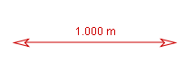

and choose Measuring Tools|Tape Measure from the popup menu. You can create as many as you need.
and choose Measuring Tools|Tape Measure from the popup menu. You can create as many as you need.
A tape measure is used for measuring distances and angles. The world (scaled) length of the tape is displayed in a readout, in a length field on the toolbar and in data tables. The angle of the tape relative to the +x-axis is displayed on the toolbar and in data tables.
Since a tape measure is a track, it has a track menu that is accessible in the Tracks menu on the menu bar or by right-clicking the main video view.
A calibration tape is a tape measure which can be used to calibrate the video scale. For more information, see calibration stick.
To create a tape measure, click the Create button and choose Measuring Tools|Tape Measure from the popup menu. You can create as many as you need.
The new tape measure is initially placed at the center of the current viewport. Drag either end of the tape to measure lengths and distances. To move the entire tape as a unit, drag the middle.


By default, the tape measure has a fixed position--that is, the position of both ends is the same in all frames. Uncheck the Fixed Position checkbox in its track menu to allow the position to vary independently from frame to frame.
It is often useful to measure the distance between two point mass tracks. This is accomplished most easily by creating a tape measure and attaching its ends to the point masses. To attach the ends, choose the Attach Points... item in the tape's track menu, then select the desired point mass tracks from the dropdown lists in the Attach Points dialog. You can attach to any point mass track including a center of mass, particle model or data track.
Attaching the ends automatically unfixes the tape.

Locking the tape measure prevents any changes in its end positions. Lock the tape by turning on the Locked property in its track menu.
Note that if the scale of the video changes, the tape readout will show a different world length even though the end positions of the tape have not changed.